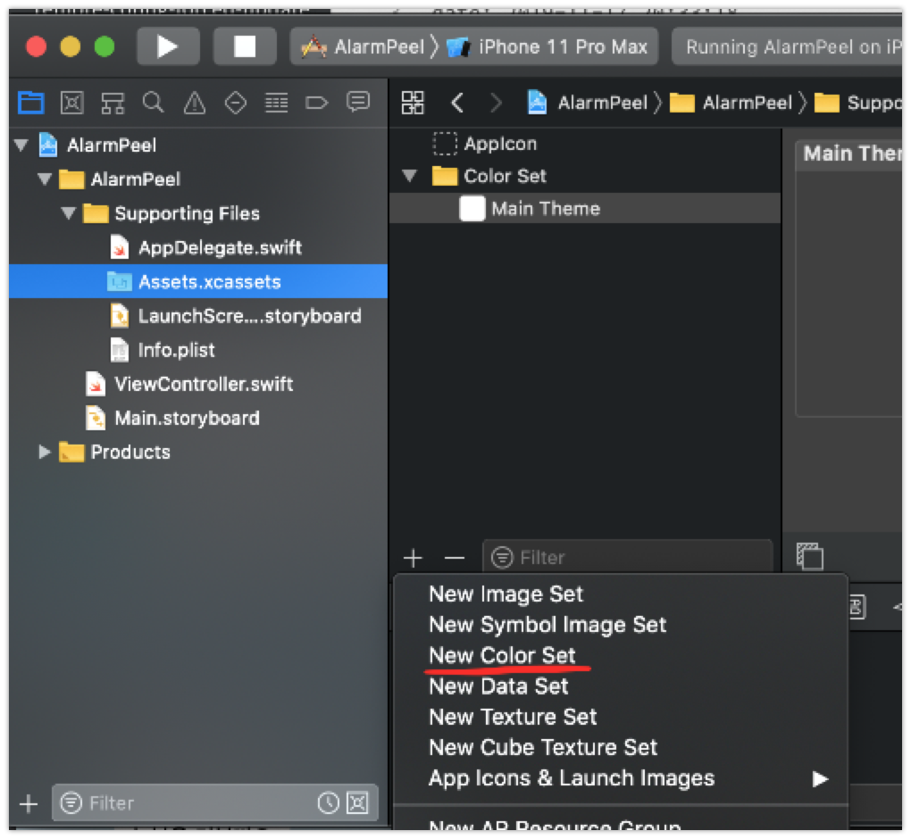
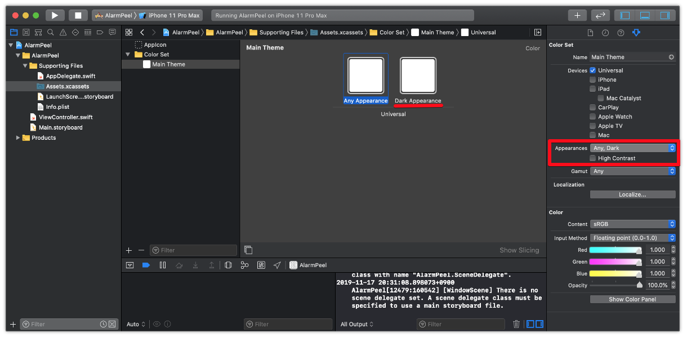
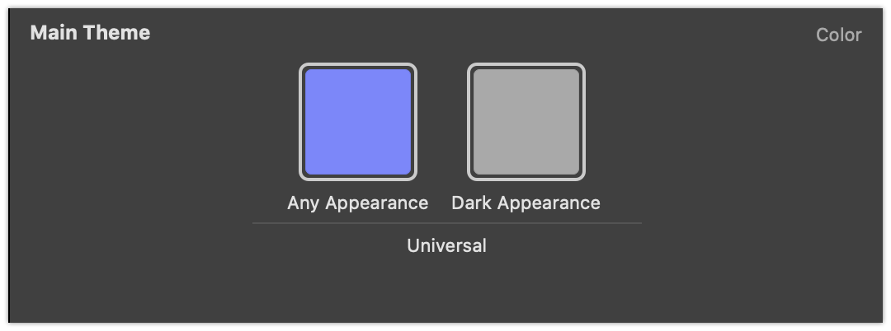
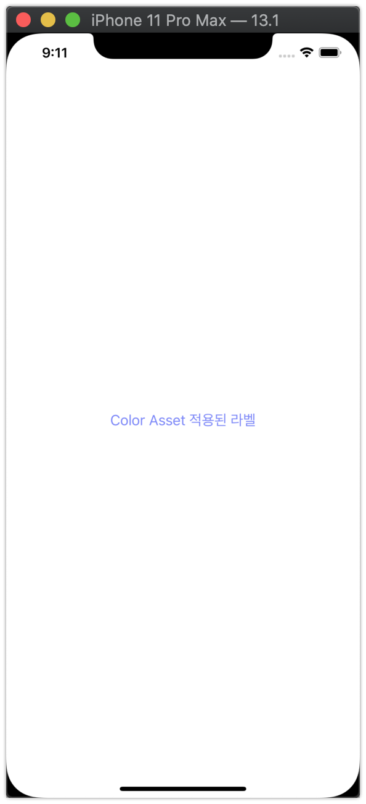
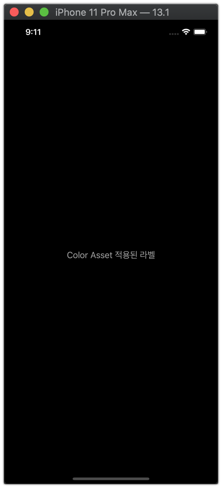
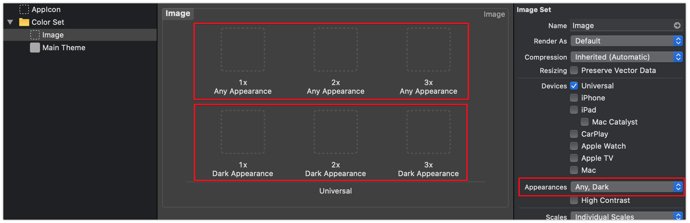

iOS13, 다크모드를 공개하다
2019년 가을, iOS13이 공개되었습니다. iOS13에는 많은 변화가 있었고 앱 개발자들은 iOS13에 대응되는 앱을 출시할 때 다크모드에 대한 설정을 해야만 했습니다. 다크모드를 On하는 순간 기존 디자인들이 펑펑 신나게 터져나갔습니다.
그래서 아마 대부분의 서비스들은 plist의 UIUserInterfaceStyle 의 값을 Light로 설정함으로써 강제로 다크모드를 사용하지 않는 방향으로 설정했을겁니다. ~항상 부족한 리소스~
But, 가장 좋은 방법은 다크모드의 의도에 맞게 ColorSet을 만드는겁니다.
지금 당장 라이브중인 서비스에 다크모드 지원을 할 수 없더라도, 추후 지원을 위해 다크모드 지원방법을 학습하고, 가능하다면 미리 Color Set 정도는 만들어 둘 수 있을 것 같습니다.
다크모드를 지원하기 위한 여정
다크모드를 지원하기 위해서 크게 2가지 변경이 필요합니다.
- 색상의 변경
- 이미지 리소스 변경
색상의 변경은 Color Asset으로 대응할 수 있으며, 이미지도 마찬가지로 Image Asset으로 대응할 수 있습니다.
1. Color Asset 대응
Color Asset은 iOS11 에서 처음 공개되었습니다. Color도 Image처럼 Assets으로 등록, 사용할 수 있게 되었습니다. 다크모드 지원을 위해서는 Color Asset 사용이 필수라고 봐도 무방할 것 같습니다.
Color Asset을 등록하는 방법은 다음과 같습니다.
1-1. Color Set 추가
Color Set을 추가합니다. 여기서의 이름은 Black, White 등 색상이 직접적으로 나타내는 이름이 아닌, Main Theme 등 스타일 이름으로 지정해야 합니다. Black이 다크모드에선 검은색이 아니니까요.

1-2. Appearances변경
Appearances는 Default로 None으로 설정되어 있습니다. 드랍다운 메뉴를 선택 후 Any, Dark를 선택합니다. 변경하면 아래 스크린샷처럼 2개의 색상을 지정할 수 있도록 UI가 변경됩니다.
Any는 기본색상, Dark는 다크모드에서 보이는 색상이라고 생각하면 됩니다.


1-3. 확인
| 기본 | 다크모드 |
|---|---|
|  |  |
동일한 앱을 일반모드와 다크모드로 실행했을 때 위와 같은 결과를 얻을 수 있습니다.
Image Asset 대응
Image Asset도 Color Asset과 동일합니다.
Appearances를 Any, Dark로 변경 후 각 모드에 맞는 이미지 리소스를 추가하면 됩니다.
